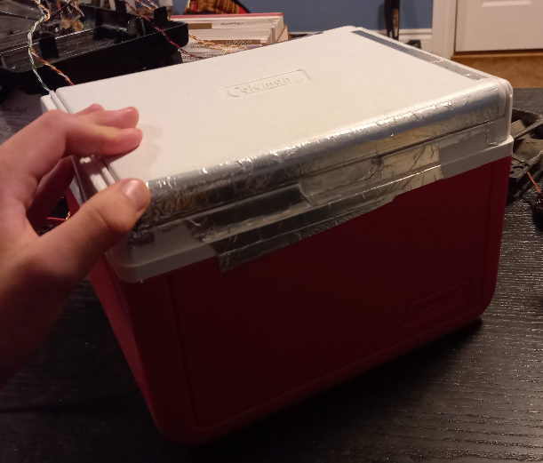
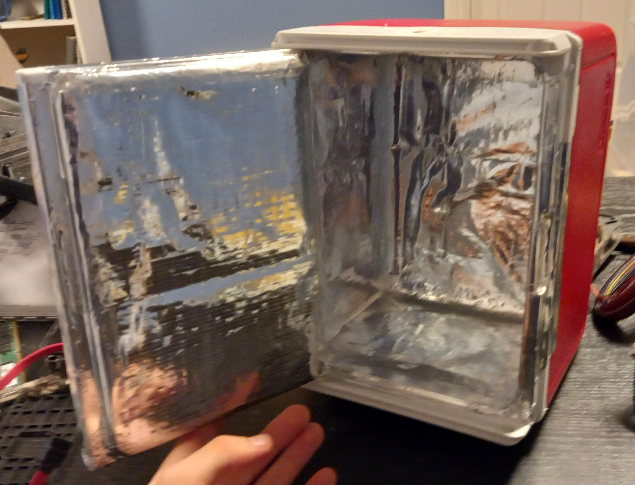
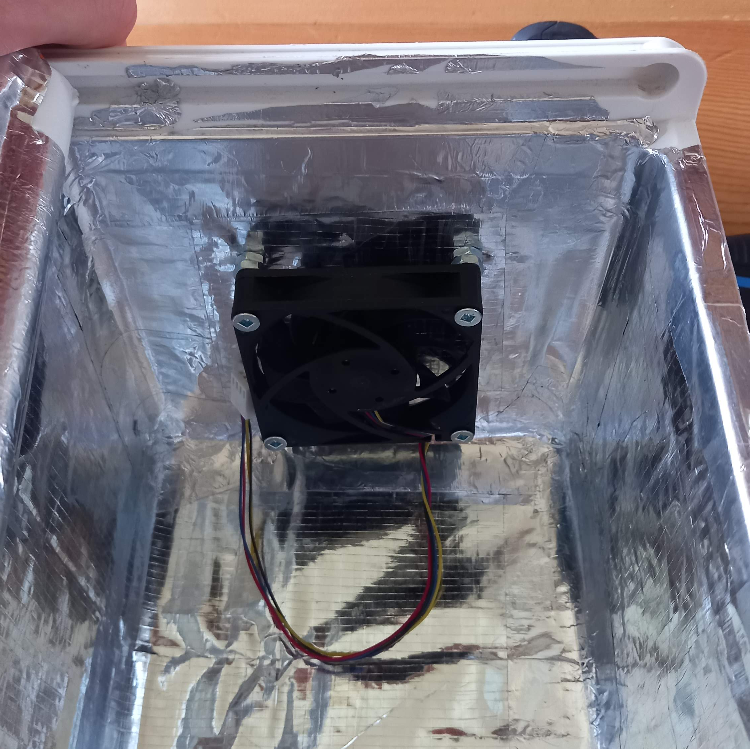
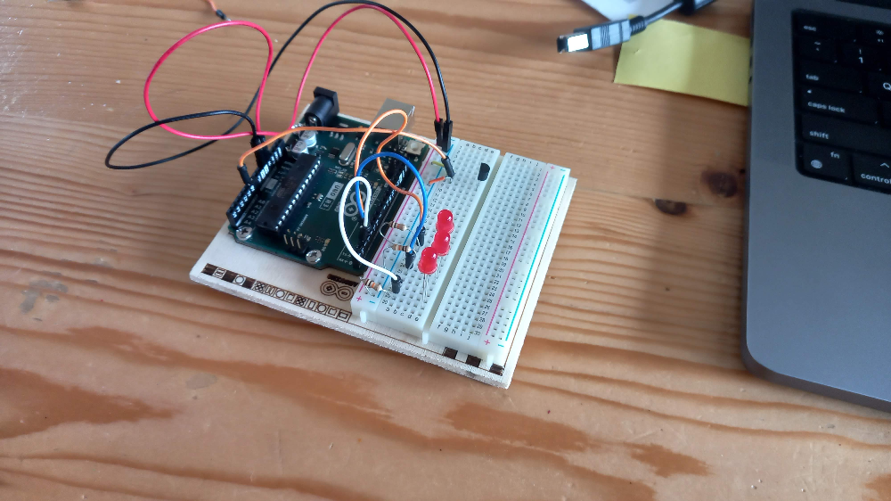
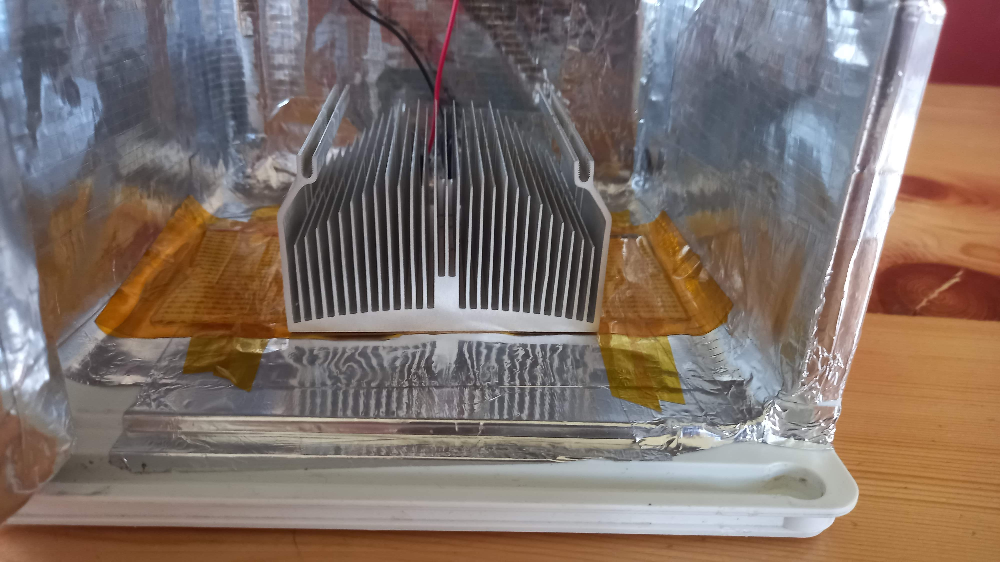

Homemade CO2 Incubator
May 2024 I started building a CO2 incubator to try and grow cells. This page describes the steps I took, along with where I got stuck, and eventually put the project on hiatus.
I followed Andrew Pelling's instructions from 2014 on how to build an incubator.
I first searched my house for a cooler I could sacrifice for the project, and found this little one. This one is significantly smaller than the one in Dr. Pelling's instructions, but I figured it would work fine nonetheless.

I covered the whole inside of the cooler with a reflective tarp. I glued the tarp to the sides with hot glue, and also used aluminum tape on the edges to keep the whole interior reflective.

Once the whole thing was covered in reflective material, I disassembled an old defunct desktop computer from my parent's garage and extracted the cooling fan and heat sink. I secured the fan by screwing it to the top of the incubator. I covered the holes at the top of the incubator with aluminum tape to keep it all airtight.

I decided I would start with the heating element to familiarize myself with elecctronics, and then I would give a shot at the CO2 modulation. This was my first time working with electronics. I made a very simple LED program using an Arduino, and felt ready to order my components.

I ordered a small heating matt, along with some heat sensors. The heating matt would eventually be paired with the heat sink I also extracted from the defunct desktop, and would look something a little like this:

Using the temperature sensor I got from my order, I put together a small circuit which read the temperature in the room. My sensor reading between 50-60 degrees Celcius once I started getting any output. I figured something was wrong with my circuit, so I unplugged the Arduino and went to adjust things. I picked up the sensor, and it burned my fingers! (maybe the temperature readings were correct...)
After I got burned by the sensor, I decided to put this project on pause until I educated myself more about circuits. That way I wouldn't get hurt again playing around with something I didn't quite understand. Especially since this was the safe part of the project.
I have yet to return to this project because I decided to familiarize myself with more of the software side. You can read more here.